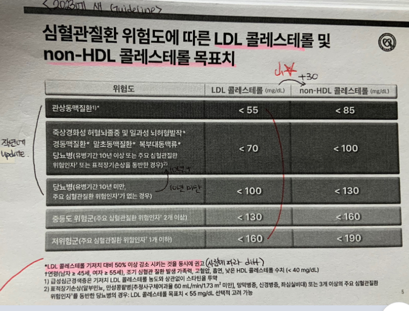
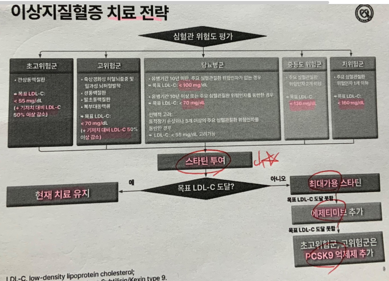

12. 이상지질혈증
원인 | |||||
일차성 이상지질혈증 | 일차성 고콜레스테롤혈증 | ||||
이차성 이상지질혈증 | 약물유발 고콜레스테롤혈증, 신증후군, 갑상샘저하증, 쿠싱증후군, 당뇨병 | ||||
가족성 이상지질혈증 | 가족성 고콜레스테롤혈증 | ||||
기타 | 대사증후군 | ||||
평가목표 1) 검사 결과 설명 2) 가족성/이차성 이상지질혈증의 원인질환 감별 3) 심혈관질환의 위험을 평가하고 적절한 치료방법 선택 | |||||
구체적인 성과 | |||||
병력청취 | 이차성 이상지질혈증의 원인질환 감별 | 내분비 | 갑상샘기능저하증: 추위불내성, 체중증가, 변비 쿠싱증후군: 체중증가, 배에 보라색 선, 얼굴이 동그래짐, 스테로이드 복용력 당뇨병: 다음, 다뇨, 다갈, 체중감소 | ||
|
| 신장 | 신증후군: 거품뇨, 부종, 소변량감소, 체중증가 | ||
|
| 기타 | 약물: 여성호르몬(폐경기 여성, TG↑, LDL↓), 스테로이드, 베타차단제, 이뇨제(thiazide) | ||
| 심혈관질환의 위험요인 확인 | 1. 연령: 남 ≥ 45세 / 여 ≥ 55세 2. 고혈압: ≥140/90mmHg or 항고혈압제 복용 중 3. 흡연: 현재 흡연 (과거는 X) 4. 관상동맥질환 조기발병 가족력: 남 < 55세 / 여 < 65세 5. Low HDL-C: < 40 mg/dL | |||
| 고지혈증에 의한 합병증 | LDL – 죽상동맥경화성 심혈관질환(ASCVD): 흉통/호흡곤란 뇌혈관질환: 어지럼/시야이상/두통/팔다리 힘빠짐 TG – 급성 췌장염 | |||
신체 진찰 | 원인질환 감별 | V/S 확인, 결막 확인(빈혈), 공막 확인(황달), 황색판종(Xanthelasma) 목: 갑상샘 촉진, 경동맥 청진 피부: 하지 부종, Xanthoma 시진(손바닥, 팔꿈치, 발목) 가슴: 심음 청진 (5군데) 복부: 시(수술 흔적, 복부팽만), 청(배 5군데 3초씩), 타(4군데), 촉(4군데 얕/깊, 간 촉진) | |||
| 심혈관질환 유무 확인 | 경동맥청진, 심음청진 | |||
진단 및 치료 | 일차성 | 간기능검사, 혈당검사, 혈액검사(BUN/Cr) | 생활습관교정, 스타틴 | ||
| 가족성 | LDL 수용체 유전자검사 | 생활습관교정, 스타틴 | ||
| 이차성 | 갑상샘기능저하증 | TFT | 갑상샘호르몬 | |
|
| 신증후군 | 소변검사, 혈액검사(BUN/Cr), 신장조직검사 | 스테로이드, 저염/저단백식, 혈압조절 | |
|
| 쿠싱증후군 | 혈중 cortisol, 덱사메타손 억제 검사
| 스테로이드 천천히 중단/부신절제술/뇌수술 | |
|
| 당뇨병 | 혈당검사, 당화혈색소검사, 소변검사
| 생활습관교정, 혈당강하제 | |
|
| 약물 유발 |
| 약물중단 후 재검 | |
| 약물 치료가 필요한 환자 | [스타틴 적응증] 1. 초고위험군(관상동맥질환): LDL ≥ 55 2. 고위험군(죽상경화성 허혈뇌졸중, 일과성뇌허혈발작, 경동맥질환, 말초동맥질환, 복부대동맥류, 당뇨병(≥10년 or 표적장기 손상 or 주요 심혈관질환 위험인자 3개 이상): LDL ≥ 70 3. 당뇨병(<10년, 주요심혈관질환 위험인자X): LDL ≥ 100 4. 중등도위험군(위험인자≥2개): 수 주~수 개월 생활습관 개선 후에도 LDL ≥ 130이면 시작 5. 저위험군(위험인자 0~1): 수 주~수 개월 생활습관 개선 후에도 LDL ≥ 160이면 시작 6. 위험인자 상관없이 190 이상이면 스타틴 시작  
[TG 혈증 치료 적응증 – 피브린산유도체/오메가3] TG ≥ 500mg/dL: 약물치료(Fibrate, Omega3) TG 200~499mg/dL: LDL부터 낮추기(생활습관개선, 스타틴), LDL 낮춘 후에도 200~499면 약물치료 | |||
환자교육 | 식이조절 및 운동 교육 | [식이조절] 규칙적 식사, 저지방식, 콜레스테롤 제한, 지나친 탄수화물 섭취 자제, 포화지방(동물성 기름) 줄이기 [운동] 규칙적인 유산소운동, 체중감량 [금주/금연] [약물 부작용] 소화불량, 근육통, 간질환 | |||
질환 | 병력청취 | 질환 설명 | 신체진찰 | 검사 | 치료 | |
일차성 이상지질혈증 6+2 | 대사증후군, 건강하지 않은 식습관, 운동부족, 흡연, 음주 | 지방 위주 식생활, 운동 부족 등에 의해 발생한 고지혈증 | 복부비만 | 간기능검사, 혈당검사, 혈액검사(BUN/Cr) | 생활습관교정, 스타틴 | |
가족성 이상지질혈증 0+1 | 젊은 나이, 가족력(고지혈증, 심질환) | 유전자 돌연변이에 의해 발생하는 고콜레스테롤혈증 | 발목 등에 황색종 | LDL 수용체 유전자검사 | 생활습관교정, 스타틴 | |
이차성 | 갑상샘기능 저하증 | 추위불내성, 체중증가, 변비 | 갑상샘이 갑상샘호르몬을 충분히 만들지 못함 | 갑상샘 종대 | TFT | 갑상샘호르몬 |
| 신증후군 | 거품뇨, 부종, 소변량감소, 체중증가 | 신장의 사구체를 이루는 모세혈관에 이상이 생겨 단백뇨, 부종, 고지혈증 등이 나타나는 질환 | 하지부종 | 소변검사, 혈액검사(BUN/Cr), 신장조직검사 | 스테로이드, 저염/저단백식, 혈압조절 |
| 쿠싱 증후군 | 중심성 비만, 자색선조, 다모증, 무월경, 멍이 잘 듦, 스테로이드 복용력 | 부신에서 나오는 호르몬(코티솔) 과다 → 혈당 올림(체형변화) / 혈관수축(혈압상승) | 복부시진(자색선조, 복부비만) | 혈중 cortisol, 덱사메타손 억제 검사
| 스테로이드 천천히 중단/부신절제술/뇌수술 |
| 당뇨병 | 다음, 다뇨, 다갈, 체중감소 | 혈당을 낮추는 호르몬인 인슐린에 대한 신체 반응 감소 → 혈당 올라가고 혈액 속 과도한 포도당은 간으로 이동해 지방 합성 증가시킴 → 중성지방혈증 |
| 혈당검사, 당화혈색소검사, 소변검사
| 생활습관교정, 혈당강하제 |
| 약물 유발 0+1 | 에스트로겐(TG↑), 스테로이드, 베타차단제, 이뇨제(thiazide) |
| 하지부종 |
| 약물중단 후 재검 |
O | 언제 검사/검사 결과 (총 콜레스테롤/LDL/HDL/TG) [LDL은 나쁜 콜레스테롤, HDL은 좋은 콜레스테롤입니다.] | ||
L |
| ||
D |
| ||
Co | [검사 course] 검사 전 과음/과식 8시간 이상 공복은 잘 지켰나요 | ||
Ex | 이전 고지혈증 진단 -> (있다면) 고지혈증 약 드신 적 있나요/약 드시고 조절 잘 됐나요 | ||
C |
| ||
A | [OPEN] 다른 불편한 곳은 없으세요? | ||
| 일차성 이상지질혈증 | 키, 몸무게, 허리둘레, 수면무호흡(코골이, 주간졸림) | |
| 가족성 이상지질혈증 | 눈/관절 주변 노란 덩어리 | |
| 전신 | 체중변화, 피로 | |
| 합병증 – 죽상경화증 + 신증후군 = 뇌,눈,심,신 | 뇌/눈-어지럼, 시야이상, 두통, 팔다리 힘빠짐 심장-흉통, 호흡곤란 | |
|
| 거품뇨, 부종, 소변량 감소 | |
| 갑상샘저하증 | 추위불내성, 변비 | |
| 쿠싱증후군 | 둥근 얼굴, 복부 자색선조, 체중 증가 | |
| 당뇨병 | 다음, 다갈, 다뇨 | |
F |
| ||
E | 건강검진 – 결과 (고혈압/당뇨 없었는지) | ||
외 | 입원/수술 | ||
과 | 당뇨(언제 진단), 고혈압, 간질환, 심혈관질환 | ||
약 | 약물 (피임약, 호르몬 대체요법, 스테로이드) | ||
사 | 술/담배/커피/직업,스트레스/식습관(규칙적, 주로 먹는 음식, 기름지고 자극적, 야식)/운동 | ||
가 | 고지혈증 심혈관질환(남<55세, 여<65세) [(ex.심근경색 사망) 상심이 크셨겠습니다. 당시 가족분 나이를 기억하시나요?] | ||
여 | 폐경여부-얼굴 화끈, 안면홍조, 발한 | ||
PEx | 동의 구하기 손 씻기 | ||
| 기본 | V/S 확인 (혈압, 맥박, 호흡수, 체온) + 신체 계측 1 눈: 빈혈, 황달, 황색판종 2 목: 갑상샘 촉진, 경동맥 청진 3 피부: Xanthoma 시진(손바닥, 팔꿈치, 발목), 오목부종 | |
| 가슴 | 심음청진 (5군데) | |
| 복부(간 포함) | 복부: 시(자색선조)-청 (5군데 3초씩)-타(4군데, 간/비장, 복수)-촉(4군데 얕/깊, 간,비장 촉진) | |
| 협조해주셔서 감사합니다. 불편한 건 없으셨나요? 손씻기 | ||
| 일차성 이상지질혈증
| 혈액검사(지질수치, CBC, 간수치), 혈당검사, EKG, 심초음파 | 생활습관 개선, 스타틴 |
| 가족성 이상지질혈증 | LDL 수용체 유전자검사 | 생활습관교정, 스타틴 |
| 갑상샘기능저하증 | TFT | 갑상샘호르몬 |
| 신증후군 | 소변검사, 혈액검사(BUN/Cr), 신장조직검사 | 스테로이드, 저염/저단백식, 혈압조절 |
| 쿠싱증후군 | 혈중 cortisol, 덱사메타손 억제 검사
| 스테로이드 천천히 중단/부신절제술/뇌수술 |
| 당뇨병 | 혈당검사, 당화혈색소검사, 소변검사 | 생활습관교정, 혈당강하제 |
| 고중성지방혈증 |
| 오메가3 |
교육 | 안심 [지질 수치가 높게 나와서 많이 놀라셨을 것 같습니다. 지금부터 치료를 잘 받으시면 호전되실 수 있습니다. 일찍 병원에 잘 오셨습니다.] 진단감별진단: 일차성 > DDx. 대사증후군, 내분비질환 치료 [고지혈증 합병증] 고지혈증 환자분들은 혈관벽에 지방이 달라붙어 쌓이면서 혈관이 점점 좁아져서 심혈관질환이나 뇌혈관질환까지 발생하게 될 수 있습니다. 정기적으로 병원에서 심장/뇌혈관에 이상이 없는지 검진 받으셔야 합니다. 회피교정 [생활습관개선] 고지혈증은 건강한 식습관이 치료에 굉장히 중요합니다. 규칙적으로 식사하시고 지방이 적은 음식을 드시는 것을 권합니다. 동물성 기름, 버터, 팜유 등 포화지방 섭취를 자제하시고 지나친 탄수화물 섭취도 줄이는 것이 좋습니다. 또한 심혈관질환 예방을 위해서는 규칙적인 유산소 운동과 체중 감량이 꼭 필요합니다. 흡연은 심혈관질환의 위험을 높이므로 금연하시는 것이 좋습니다. 알코올도 중성지방을 증가시키기 때문에 최대한 금주하시는 것이 좋겠습니다.
[스타틴 부작용 및 주의사항] 스타틴을 드신 후 가벼운 근육통이 나타날 수 있는데, 너무 놀라지 마시고 저에게 말씀해주시면 용량을 조절해 드리겠습니다. 그 외에 간수치나 혈당이 오르는 경우도 있지만 심각한 문제가 발생하는 경우는 드물고, 부작용보다 스타틴이 주는 심근경색/뇌졸중 예방 효과가 훨씬 크기 때문에 약을 꾸준히 드셔야 합니다. 간기능과 혈당은 저희가 정기적으로 혈액검사를 해서 수치를 확인할 예정입니다. 약을 드실 때에는 자몽주스와 같이 먹지 않도록 주의해주세요. | ||
PPI | 궁금하신 점 있으실까요? | ||
대사증후군 진단기준